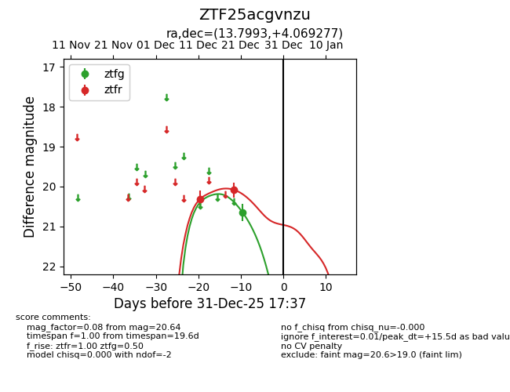
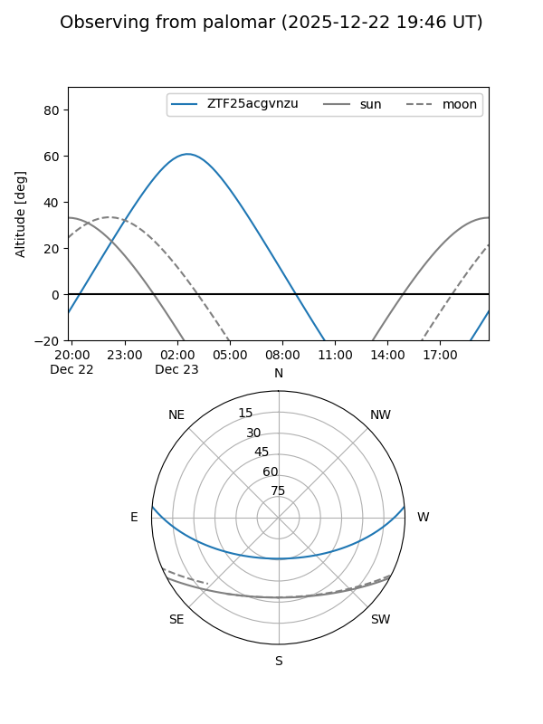

ZTF25acgvnzu
Target ZTF25acgvnzu at 2026-01-09 12:49
Aliases and brokers:
FINK: link
Lasair: link
ALeRCE: link
alt names
ZTF25acgvnzu (ztf,fink_ztf)
Coordinates:
equatorial (ra, dec) = 13.7993,+4.06928
equatorial (HMS+DMS) = 00:55:11.84,+04:04:09.40
galactic (l, b) = (124.7413,-58.78926)
Flags:
Photometry:
last ztfg=20.64, ztfr=20.08
1 ztfg, 2 ztfr detections
Lightcurve

Visibility


Additional plots